Pertemuan ini terdiri dari dua modul yang saling berkelanjutan.
Modul 1 bertujuan agar mahasiswa memahami kerangka dasar aplikasi
Flutter melalui MaterialApp dan
Scaffold, mampu membedakan penggunaan
StatelessWidget dan StatefulWidget,
serta mampu menerapkan fungsi setState() untuk
membangun UI yang interaktif — dicontohkan lewat kartu saldo yang
dapat disembunyikan dan ditampilkan kembali.
Modul 2 melanjutkan dashboard yang sudah dibuat pada Modul 1
dengan menambahkan kemampuan layouting yang lebih kompleks:
menerapkan widget Row untuk menyusun deretan tombol
aksi, menerapkan widget Column untuk menyusun daftar
transaksi menggunakan ListTile, serta mengatur
padding, margin, dan warna pada Container agar
tampilan lebih rapi dan enak dilihat.
Stateless Widget adalah widget statis yang
tampilannya tidak pernah berubah setelah dirender di layar, karena
tidak memiliki data internal (state) yang dapat berubah. Widget
jenis ini lebih ringan dan cepat, dan cocok dipakai untuk elemen
seperti label teks, ikon, atau gambar statis — contohnya
GreetingWidget pada dashboard ini.
Stateful Widget sebaliknya adalah widget dinamis
yang tampilannya dapat berubah sebagai respons terhadap interaksi
pengguna atau data baru. Widget ini menyimpan objek data internal
(State) dan dapat merender ulang UI melalui
setState(). Untuk membuatnya, dibutuhkan dua
class: satu yang meng-extend
StatefulWidget dan satu lagi yang meng-extend
State<T>, tempat seluruh logika dan variabel
state sebenarnya disimpan.
setState() adalah method yang memberi tahu
Flutter bahwa ada perubahan data pada state, sehingga
build() perlu dipanggil ulang agar tampilan
disinkronkan dengan data terbaru. Tanpa memanggil
setState(), perubahan pada variabel biasa tidak akan
pernah terlihat di layar meskipun nilainya sudah berubah di balik
layar.
Row dan Column adalah dua widget
layouting dasar pada Flutter. Row menyusun elemen
anaknya secara horizontal (menyamping kiri ke kanan), sedangkan
Column menyusun elemen anaknya secara vertikal
(menurun atas ke bawah). Properti
mainAxisAlignment mengatur jarak antar elemen pada
sumbu utama — misalnya nilai spaceEvenly membagi
ruang kosong yang tersisa secara merata di antara dan di sekitar
setiap elemen.
Container adalah widget serbaguna yang berfungsi
sebagai "kotak" pembungkus, dilengkapi properti
padding (jarak dari tepi kotak ke isinya),
margin (jarak dari kotak ke elemen di luarnya), serta
decoration untuk mengatur warna latar, sudut
membulat, hingga border.
ListTile adalah widget bawaan Material Design
yang memudahkan pembuatan baris daftar secara instan tanpa perlu
menyusun Row/Column manual. ListTile memiliki tiga slot utama:
leading untuk elemen paling kiri (biasanya ikon atau
avatar), title untuk judul utama baris, dan
trailing untuk elemen paling kanan (biasanya nominal
atau tombol) — kombinasi inilah yang dipakai untuk menampilkan
tiap baris pada daftar "Transaksi Terakhir".
- Laptop / Komputer dengan Flutter SDK dan Dart terinstall
- Visual Studio Code (Code Editor) dengan ekstensi Flutter & Dart
- Chrome Browser / Android Emulator sebagai target device untuk menjalankan aplikasi
- Modul Praktikum Aplikasi Mobile — Praktikum 1: Pengenalan Widgets dan Praktikum 2: Layouting & Styling
Modul 1 membangun dashboard versi awal berisi dua widget:
GreetingWidget sebagai sapaan pengguna (Stateless)
dan BalanceCardWidget sebagai kartu saldo yang bisa
disembunyikan/ditampilkan (Stateful).
Langkah pertama adalah membangun kerangka aplikasi.
MyApp dijadikan root widget berupa
StatelessWidget yang mengembalikan
MaterialApp dengan tema warna
Colors.blue, lalu
DashboardScreen menyediakan
Scaffold berisi AppBar
berjudul "Praktikum 1: Widgets" dan body berupa
Padding + Column yang akan diisi
GreetingWidget dan BalanceCardWidget.
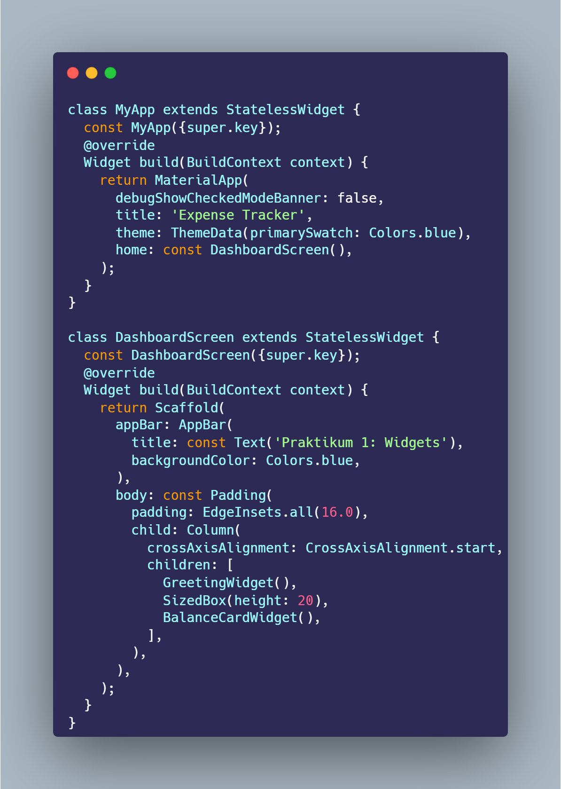
void main() => runApp(const MyApp()) adalah
titik masuk aplikasi. MyApp cukup mengembalikan
MaterialApp(theme: ThemeData(primarySwatch: Colors.blue),
home: const DashboardScreen()), sehingga seluruh komponen Material Design pada aplikasi
mengikuti palet warna biru secara konsisten.
Pada DashboardScreen, body dibungkus
Padding(padding: EdgeInsets.all(16.0)) agar
konten tidak menempel ke tepi layar, lalu
Column(crossAxisAlignment: CrossAxisAlignment.start,
children: [GreetingWidget(), SizedBox(height: 20),
BalanceCardWidget()])
menyusun kedua widget secara vertikal dengan jarak 20 piksel
di antaranya.
GreetingWidget dibuat sebagai
StatelessWidget karena tampilan sapaan tidak pernah
berubah. Widget ini memakai Row untuk meletakkan
CircleAvatar berisi ikon orang di sisi kiri, lalu
Column di sebelahnya untuk menumpuk dua baris teks:
nama pengguna dan sub-teks sapaan.
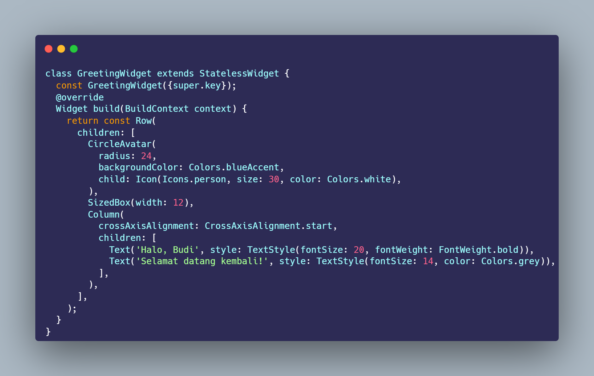
CircleAvatar(radius: 24, backgroundColor:
Colors.blueAccent, child: Icon(Icons.person, ...))
membuat lingkaran avatar berwarna biru berisi ikon orang.
SizedBox(width: 12) memberi jarak horizontal ke
teks di sebelahnya, lalu
Column(crossAxisAlignment: CrossAxisAlignment.start,
children: [Text('Halo, Saskia', ...), Text('Selamat datang
kembali!', ...)])
menumpuk dua teks rata kiri — nama dengan font tebal berukuran
20, dan sub-teks berwarna abu-abu berukuran 14. //
Karena kartu saldo harus bisa bereaksi saat ikon mata ditekan,
BalanceCardWidget wajib dibuat sebagai
StatefulWidget. Class
_BalanceCardWidgetState menyimpan variabel
bool _isBalanceVisible = true sebagai status sensor
saldo, beserta method _toggleVisibility()
yang akan membalik nilai boolean tersebut.
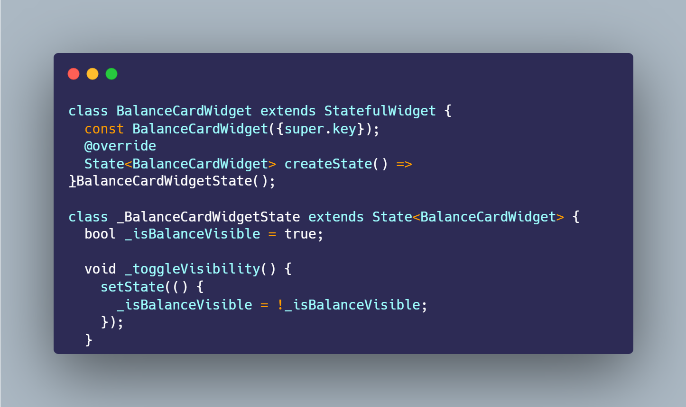
State<BalanceCardWidget> createState() =>
_BalanceCardWidgetState();
menghubungkan widget dengan class state-nya. Di dalam
_BalanceCardWidgetState, variabel
_isBalanceVisible bertindak sebagai penanda
apakah nominal saldo sedang ditampilkan (true)
atau disensor (false), sedangkan
_toggleVisibility() memanggil
setState(() { _isBalanceVisible = !_isBalanceVisible;
})
untuk membalik nilainya sekaligus memberi tahu Flutter agar
merender ulang widget.
Isi kartu dibungkus Card berwarna
Colors.blueAccent dengan sudut membulat, lalu di
dalamnya Padding dan Column menyusun
baris atas berupa Row dengan
mainAxisAlignment: MainAxisAlignment.spaceBetween
agar teks "Saldo Utama" menempel kiri dan
IconButton ikon mata menempel kanan.
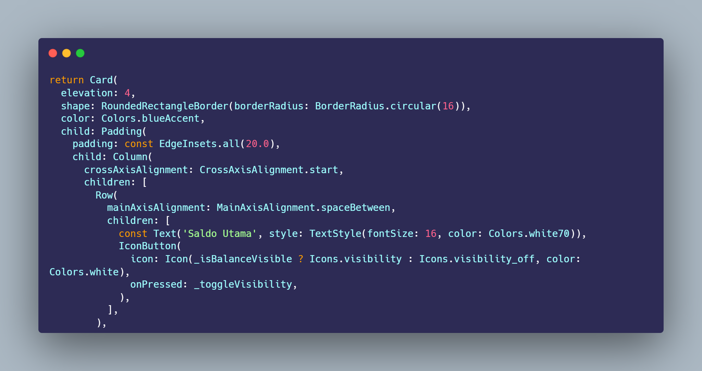
IconButton(icon: Icon(_isBalanceVisible ? Icons.visibility
: Icons.visibility_off, color: Colors.white), onPressed:
_toggleVisibility)
menampilkan ikon mata terbuka saat saldo terlihat dan ikon
mata tercoret saat saldo disensor, memakai
ternary operator untuk memilih ikon secara dinamis
berdasarkan nilai _isBalanceVisible. Setiap
tombol ditekan, onPressed memanggil
_toggleVisibility yang sudah dibuat pada langkah
sebelumnya.
Nominal saldo ditampilkan lewat
Text(_isBalanceVisible ? 'Rp 5.000.000' : 'Rp *********',
...). Setiap kali _toggleVisibility() dipanggil dan
setState() dijalankan, Flutter merender ulang
build() sehingga teks ini otomatis berpindah antara
nominal asli dan versi tersensor tanpa perlu logika tambahan.
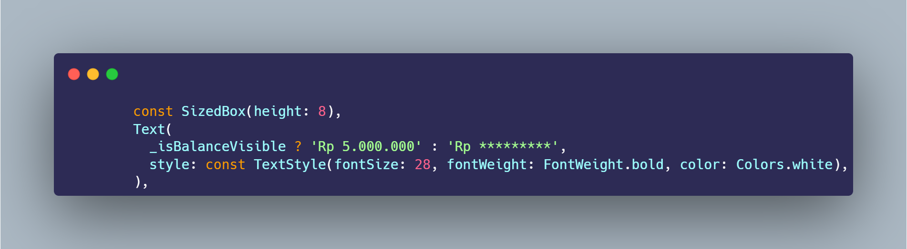
Logika ternary
kondisi ? nilaiJikaTrue : nilaiJikaFalse
dipakai di sini sebagai cara singkat menulis if-else dalam
satu baris ekspresi, cocok dipakai langsung di dalam widget
Text tanpa perlu variabel tambahan atau method
terpisah.
Aplikasi dijalankan lalu diuji dengan menekan ikon mata pada
kartu saldo untuk membuktikan bahwa setState()
benar-benar memicu perubahan tampilan secara langsung
(realtime), baik pada teks nominal maupun ikon itu sendiri.
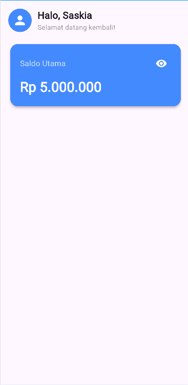
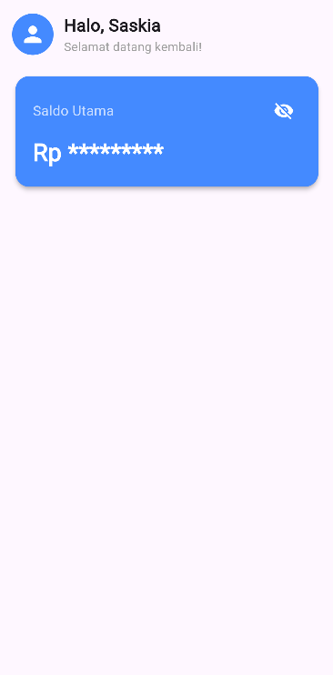
setState() pada BalanceCardWidget berjalan dengan
benar.
Warna Colors.blueAccent pada
Card diganti menjadi gradasi
Colors.teal. Agar transisi warnanya lebih halus
dibanding warna solid, Card dibungkus tambahan
Container dengan
BoxDecoration(gradient: LinearGradient(colors:
[Colors.teal.shade400, Colors.teal.shade700])), serta ThemeData(primarySwatch: Colors.teal) pada
MyApp agar warna AppBar ikut menyesuaikan.
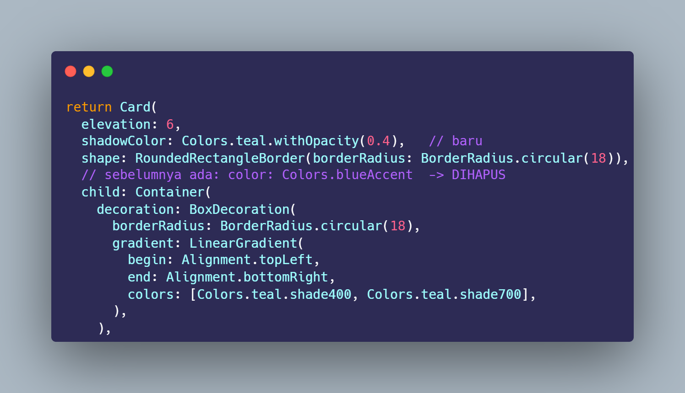
Sebelum: Card langsung diberi
color: Colors.blueAccent sebagai warna solid, dan
tema aplikasi pada MyApp memakai
ThemeData(primarySwatch: Colors.blue).
Sesudah: properti color pada
Card dihapus, lalu Card diberi
child: Container(...) tambahan dengan
decoration: BoxDecoration(gradient: LinearGradient(begin:
Alignment.topLeft, end: Alignment.bottomRight, colors:
[Colors.teal.shade400, Colors.teal.shade700])), sehingga kartu tampil gradasi dari teal muda ke teal tua,
bukan lagi warna solid tunggal. Dua penyesuaian lain juga
ditambahkan agar warna konsisten di seluruh aplikasi:
-
ThemeData(primarySwatch: Colors.blue)diubah menjadiThemeData(primarySwatch: Colors.teal)padaMyApp, sehingga AppBar dan komponen Material lain ikut berubah ke teal. -
shadowColor: Colors.teal.withOpacity(0.4)ditambahkan padaCardagar bayangan yang dihasilkan senada dengan warna kartu, bukan lagi bayangan abu-abu default.
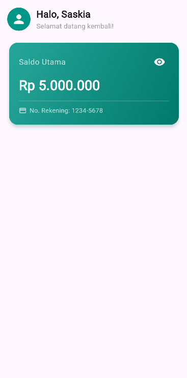
Di bawah nominal saldo, ditambahkan
Divider tipis sebagai pemisah, lalu
Row berisi Icon(Icons.credit_card) dan
Text('No. Rekening: 1234-5678') memakai variabel
final String _noRekening = '1234-5678'
yang disisipkan lewat string interpolation
'No. Rekening: $_noRekening'.
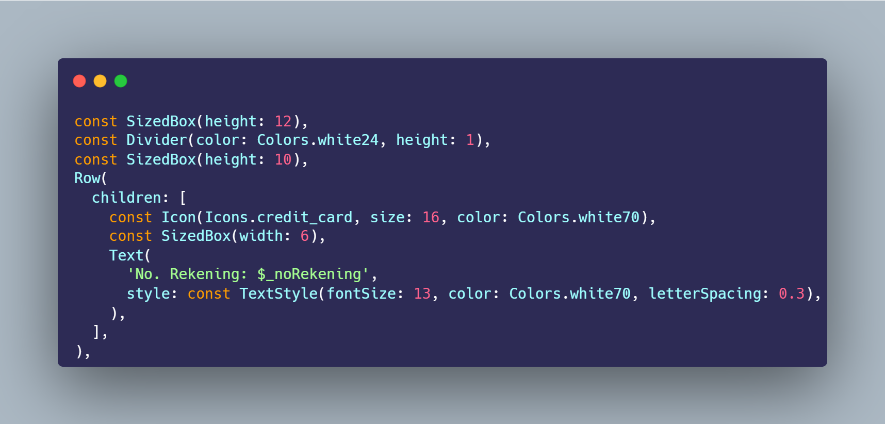
Sebelum: Column pada BalanceCardWidget
berhenti setelah widget Text nominal saldo —
tidak ada elemen lain di bawahnya.
Sesudah: ditambahkan dua variabel baru pada
_BalanceCardWidgetState, yaitu
final String _balance = 'Rp 5.000.000' dan
final String _noRekening = '1234-5678', lalu di
bawah Text nominal saldo ditambahkan empat widget
baru secara berurutan:
-
SizedBox(height: 12)— jarak vertikal tambahan dari nominal saldo. -
Divider(color: Colors.white24, height: 1)— garis pemisah tipis semi-transparan. -
Row(children: [Icon(Icons.credit_card, ...), SizedBox(width: 6), Text('No. Rekening: $_noRekening', ...)])— baris berisi ikon kartu kredit dan teks nomor rekening, dengan nilai_noRekeningdisisipkan lewat string interpolation.

Modul 2 melanjutkan dashboard dari Modul 1 (lengkap dengan hasil
Tugas 1 & 2 di atas) dengan menambahkan
ActionButtonsWidget (Row) dan
RecentTransactionsWidget (Column + ListTile), lalu
membungkus seluruh dashboard dengan
SingleChildScrollView agar layar tidak
overflow saat daftar transaksi bertambah panjang.
ActionButtonsWidget dibuat sebagai
StatelessWidget yang mengembalikan
Row berisi tiga tombol aksi: Pemasukan,
Pengeluaran, dan Transfer, disusun sejajar secara horizontal
menggunakan
mainAxisAlignment: MainAxisAlignment.spaceEvenly
agar jarak dan ruang kosong di sekitar ketiganya terbagi rata.
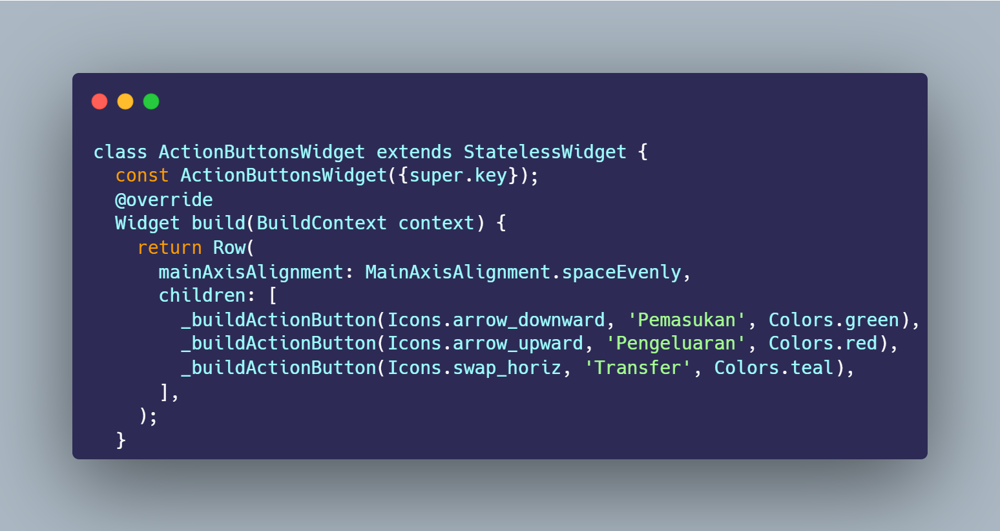
Ketiga tombol dibuat lewat method pembantu
_buildActionButton(IconData icon, String label, Color
color)
agar kode tidak berulang tiga kali dengan struktur yang sama —
cukup mengganti ikon, label, dan warna saja untuk setiap
tombolnya (hijau untuk Pemasukan, merah untuk Pengeluaran,
biru untuk Transfer).
Di dalam _buildActionButton, setiap ikon dibungkus
Container yang diberi padding agar
ikon tidak menempel tepi kotak,
decoration: BoxDecoration(color: color.withOpacity(0.2),
borderRadius: BorderRadius.circular(12))
untuk warna latar transparan dan sudut membulat, lalu
Column menumpuk Container ikon
tersebut dengan label teks di bawahnya.
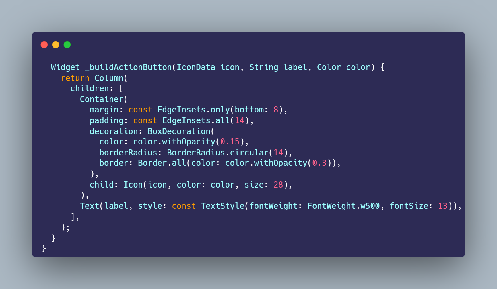
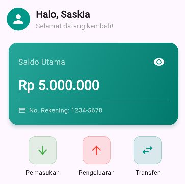
Karena daftar transaksi harus mengurut ke bawah,
RecentTransactionsWidget memakai
Column untuk menumpuk judul "Transaksi Terakhir" di
atas sebuah Card yang membungkus beberapa
ListTile berturut-turut, masing-masing dipisahkan
Divider tipis.
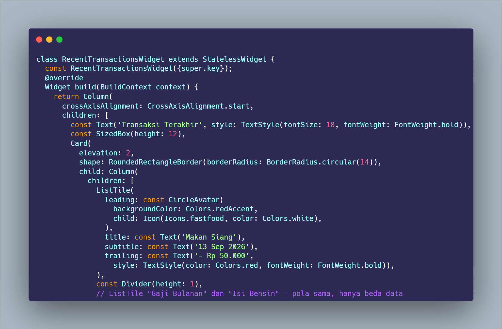
Setiap ListTile memakai
leading: CircleAvatar(child: Icon(...)) untuk
ikon kategori transaksi di sisi kiri,
title: Text(...) untuk nama transaksi,
subtitle: Text(...) untuk tanggal, dan
trailing: Text(...) untuk nominal — persis
mengikuti tiga slot leading/title/trailing yang dijelaskan
pada dasar teori.
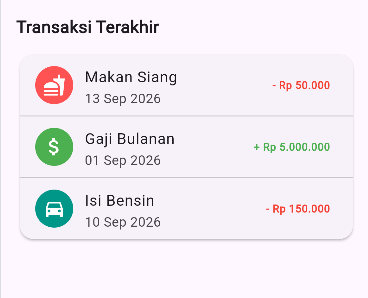
Langkah terakhir menggabungkan seluruh komponen dari Modul 1
(GreetingWidget, BalanceCardWidget)
dan Modul 2 (ActionButtonsWidget,
RecentTransactionsWidget) ke dalam satu
Column, lalu membungkus body
Scaffold dengan
SingleChildScrollView agar seluruh dashboard dapat
di-scroll vertikal dan tidak overflow ketika daftar transaksi
bertambah panjang.
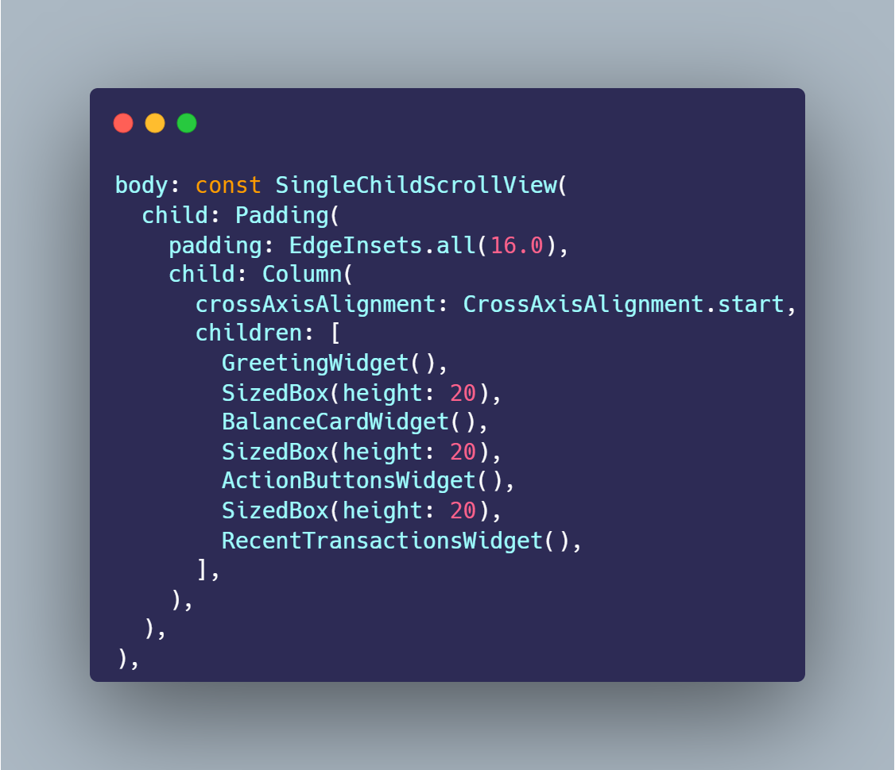
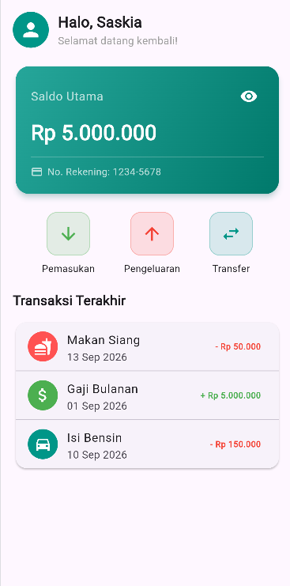
Alih-alih menulis warna merah/hijau secara manual pada setiap
ListTile, dibuat method pembantu
_buildTransactionTile({..., required bool isIncome})
yang menentukan warna dan tanda trailing secara otomatis:
isIncome == true menghasilkan warna
Colors.green dengan tanda "+", sedangkan
isIncome == false menghasilkan warna
Colors.red dengan tanda "−". Pendekatan ini membuat
styling konsisten di seluruh item tanpa risiko lupa mengganti
warna satu per satu.
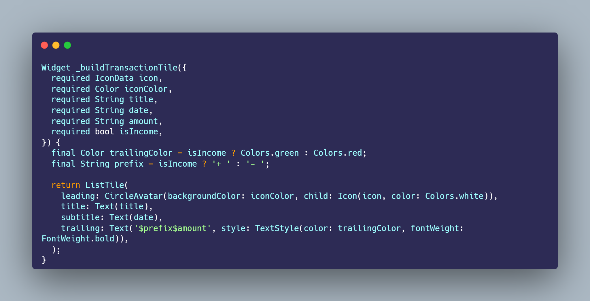
Sebelum: setiap ListTile
ditulis manual dan berulang, dengan warna trailing di-hardcode
langsung per item, misalnya
trailing: Text('- Rp 50.000', style: TextStyle(color:
Colors.red, ...))
pada item pengeluaran dan
trailing: Text('+ Rp 5.000.000', style: TextStyle(color:
Colors.green, ...))
pada item pemasukan — sehingga bila lupa mengganti warna, item
baru bisa salah warna.
Sesudah: seluruh ListTile
diganti menjadi pemanggilan satu method
_buildTransactionTile({..., required bool isIncome}). Di dalamnya:
-
final Color trailingColor = isIncome ? Colors.green : Colors.red;— warna ditentukan otomatis dari parameterisIncome, bukan ditulis manual lagi. -
final String prefix = isIncome ? '+ ' : '- ';— tanda "+"/"−" juga mengikuti jenis transaksi secara otomatis. -
trailing: Text('$prefix$amount', style: TextStyle(color: trailingColor, ...))— trailing text kini dibangun dari dua variabel di atas, sehingga warna dijamin selalu konsisten dengan jenis transaksinya.
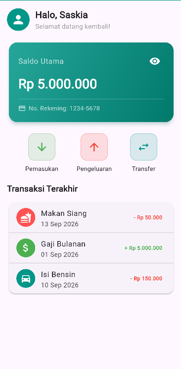
Dua pemanggilan _buildTransactionTile(...) baru
ditambahkan di bawah tiga transaksi lama, masing-masing
dipisahkan Divider: "Belanja Bulanan" senilai Rp
320.000 sebagai transaksi pengeluaran (isIncome: false), dan "Bonus Proyek" senilai Rp 750.000 sebagai transaksi
pemasukan (isIncome: true).
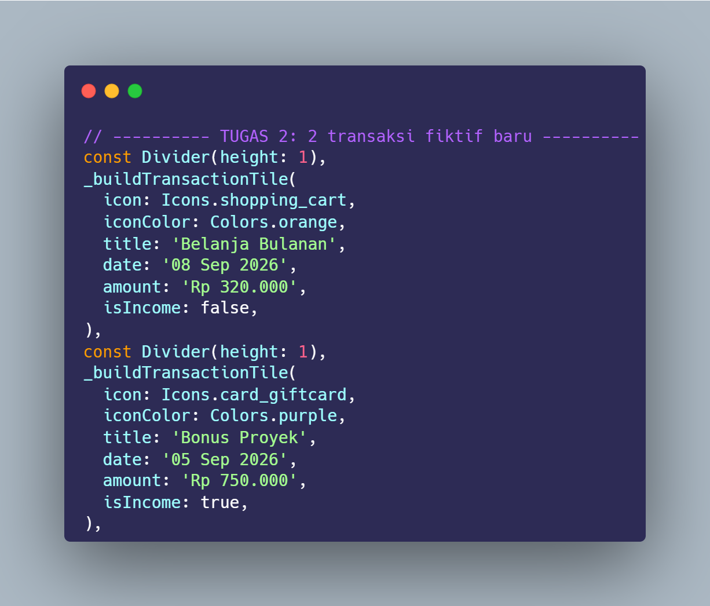
Sebelum: Column di dalam Card
hanya berisi tiga pemanggilan
_buildTransactionTile(...) yang dipisahkan dua
Divider — Makan Siang, Gaji Bulanan, dan Isi
Bensin.
Sesudah: ditambahkan satu
Divider(height: 1) lagi, diikuti dua pemanggilan
_buildTransactionTile(...) baru di urutan paling
bawah:
-
_buildTransactionTile(icon: Icons.shopping_cart, iconColor: Colors.orange, title: 'Belanja Bulanan', date: '08 Sep 2026', amount: 'Rp 320.000', isIncome: false)— transaksi pengeluaran baru, trailing otomatis berwarna merah lewat helper dari Tugas 1. -
_buildTransactionTile(icon: Icons.card_giftcard, iconColor: Colors.purple, title: 'Bonus Proyek', date: '05 Sep 2026', amount: 'Rp 750.000', isIncome: true)— transaksi pemasukan baru, trailing otomatis berwarna hijau.
Karena kedua item baru ini memakai helper
_buildTransactionTile yang sama, tidak diperlukan
penulisan ListTile manual maupun pengaturan warna
trailing tambahan — cukup mengisi parameter
isIncome yang sesuai.
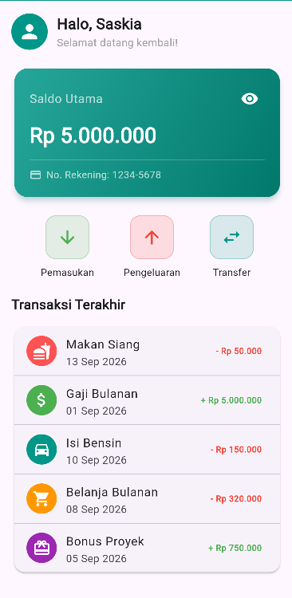
Melalui dua modul pada pertemuan ini, dashboard "Expense Tracker"
berhasil dibangun secara bertahap: dimulai dari pengenalan
StatelessWidget dan StatefulWidget pada
Modul 1, hingga penerapan layouting yang lebih kompleks dengan
Row, Column, Container, dan
ListTile pada Modul 2.
Pada Modul 1, perbedaan paling mencolok antara
GreetingWidget (Stateless) dan
BalanceCardWidget (Stateful) terlihat jelas dari
pengujian toggle visibilitas saldo: menekan ikon mata langsung
mengubah teks nominal dari "Rp 5.000.000" menjadi "Rp *********"
beserta perubahan ikon dari Icons.visibility menjadi
Icons.visibility_off, membuktikan bahwa
setState() benar-benar memicu rebuild pada widget
terkait. Kedua tugas Modul 1 — pergantian warna tema ke teal dan
penambahan teks nomor rekening — juga berhasil diterapkan tanpa
mengganggu fungsi toggle tersebut.
Pada Modul 2, penggunaan Row dengan
mainAxisAlignment.spaceEvenly terbukti efektif
menyusun tiga tombol aksi dengan jarak yang seimbang, sementara
kombinasi Column dan ListTile berhasil
menampilkan daftar transaksi secara rapi lewat tiga slot
leading/title/trailing. Pembungkusan seluruh dashboard dengan
SingleChildScrollView juga terbukti mencegah overflow
ketika daftar transaksi bertambah panjang pada Tugas 2, di mana
dua transaksi fiktif baru berhasil ditambahkan tanpa masalah
tampilan, dan warna trailing (merah/hijau) tetap konsisten berkat
helper method _buildTransactionTile yang dibuat pada
Tugas 1.
Berdasarkan seluruh tahapan praktikum yang telah dilaksanakan, diperoleh beberapa poin kesimpulan penting:
-
StatelessWidgetcocok untuk tampilan yang tidak pernah berubah sepertiGreetingWidget, sedangkanStatefulWidgetwajib dipakai ketika tampilan perlu merespons interaksi pengguna, seperti toggle visibilitas saldo padaBalanceCardWidget. - setState() adalah mekanisme inti yang menghubungkan perubahan data pada state dengan pembaruan tampilan (rebuild) di layar; tanpa memanggilnya, perubahan variabel tidak akan pernah terlihat oleh pengguna.
- Row dan Column adalah pasangan widget layouting dasar yang saling melengkapi — Row untuk susunan horizontal seperti deretan tombol aksi, Column untuk susunan vertikal seperti daftar transaksi yang terus bertambah ke bawah.
- ListTile mempercepat pembuatan baris daftar yang konsisten lewat tiga slot leading/title/trailing, dibanding menyusun Row/Column manual untuk setiap barisnya.
- Membungkus konten dengan SingleChildScrollView adalah praktik penting pada dashboard yang kontennya dapat bertambah panjang, agar aplikasi tidak mengalami error overflow ketika data bertambah.
-
Memisahkan logika berulang ke dalam method pembantu (seperti
_buildActionButtondan_buildTransactionTile) terbukti membuat kode lebih ringkas, konsisten, dan mudah dikembangkan — terlihat jelas ketika menambahkan dua transaksi baru pada Tugas 2 hanya membutuhkan dua pemanggilan method tanpa menulis ulang struktur ListTile dari awal.
Seluruh source code praktikum ini (Modul 1 dan Modul 2, beserta
hasil tugas keduanya) dapat diakses pada branch
pertemuan2 repository Github berikut: